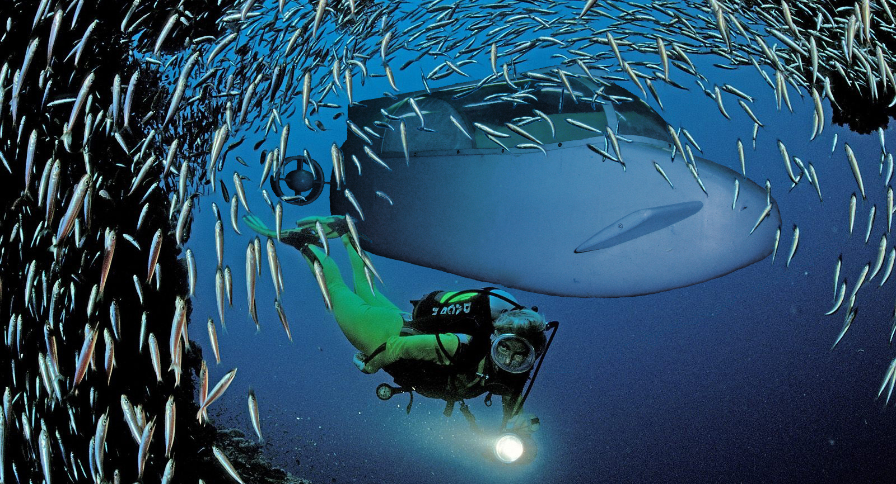

Подводный аппарат проницаемого типа «Гарпун» предназначен для транспортировки двух водолазов в легководолазном снаряжении, а также дополнительную полезную нагрузку на глубину до 60 м.
«Гарпун» может быть использован при проведении различных подводно-технических работ:
- мониторинг гидросферы в районе прибрежного шельфа;
- исследование прибрежной флоры и фауны , как в научных интересах ,так и в интересах промысловых хозяйств;
- обследование и ремонт подводных частей гидросооружений;
- поисково-спасательных работ, связанных с поиском и обследованием затонувших объектов;
- обеспечивающих и контрольно-измерительных работ при прокладке подводных участков различных коммуникаций.
Экипаж аппарата расположен тандемно и может быть оснащен любым типом легководолазного снаряжения.
Такое компоновочное решение позволяет значительно снизить лобовое сопротивление аппарата, что позволяет значительно повысить энергетическую автономность при значительном удалении от берега объекта обследования.

Наличие грузового отсека и двух дополнительных боковых контейнеров позволяют расширить возможности по выполнению различных подводных работ за счет увеличения массы перевозимого полезного груза.
Дополнительные контейнеры можно использовать также для размещения аккумуляторов и баллонов со сжатым воздухом, что значительно повышает автономность комплекса. При возникновении аварийной ситуации контейнеры сбрасываются , выполняя тем самым роль аварийного баллиста. При этом аппарат приобретает положительную плавучесть.
Управление аппаратом по дифференту осуществляется расположенным в носовой части рулями. Такое расположение позволяет использовать рули небольшой площади при их достаточно высокой эффективности.
По курсу аппарат управляется регулированием величины вектора тяги двух двигателей , расположенных в кормовой части аппарата. Таким образом аппарат может разворачиваться на 180 градусов с минимальным радиусом циркуляции.
Для обеспечения беспрепятственного покидания аппарата экипажем служит верхний фонарь, который откидывается вперед, полностью освобождая тем самым пространство сверху.
Перед покиданием аппарата экипаж переходит на автономную систему жизнеобеспечения (акваланги) и отключается от бортовых, для чего достаточно поменять дыхательный автомат. Покидание может осуществляться в любой последовательности. Для стабилизации аппарат на грунте, необходимо придать ему отрицательную плавучесть, для чего на борту размещается балластная система.
Чтобы избежать залипания аппарата, в случае вязкого грунта, аппарат может стабилизироваться в нейтральном состоянии на определенном возвышении над грунтом, для чего на борту имеется «гайдроп».